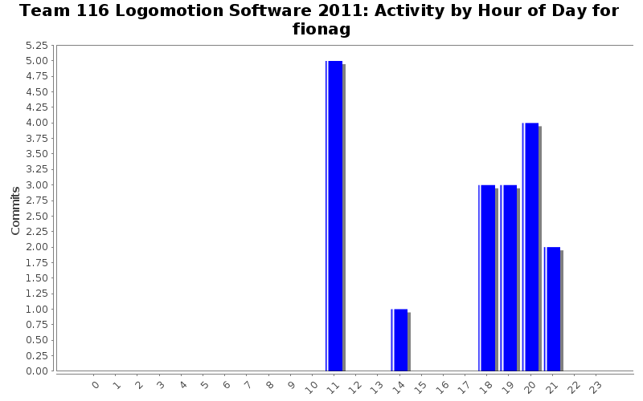
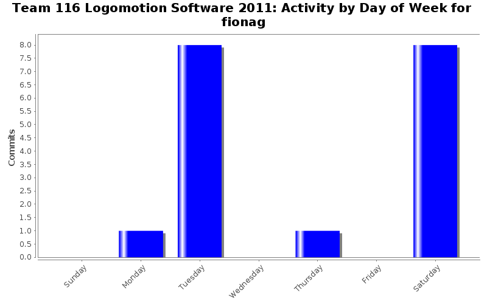

| Directory | Changes | Lines of Code | Lines per Change |
|---|---|---|---|
| / | 15 (100.0%) | 145 (100.0%) | 9.6 |
Added scale factors for SUCK_SPIT and ROTATE speeds in EndEffector.
2 lines of code changed in 1 file:
Added
AUTO_LANE_SELECTOR_CHANNEL
ANALOG1_SLOT
DigitalImput automous_lane_selector
to Automous and defined
const UINT32 AUTO_LANE_SELECTOR_CHANNEL = 3;
in IO
3 lines of code changed in 2 files:
Added warning message to Elevator
1 lines of code changed in 1 file:
Fixed the braket and naming error in EndEffector
2 lines of code changed in 1 file:
Fix the compling errors in EndEffector::spin_rollers
14 lines of code changed in 1 file:
Grabber looks like it should work, but it would be nice if someone could look over it
11 lines of code changed in 1 file:
End Effector has been edited
17 lines of code changed in 1 file:
aru stole fiona'a account and made changes that will probably be changed soon anyway >_>
24 lines of code changed in 3 files:
5 lines of code changed in 2 files:
28 lines of code changed in 1 file:
Added code to EndEffector::suck_in() and EndEffector::suck_out()
38 lines of code changed in 1 file: